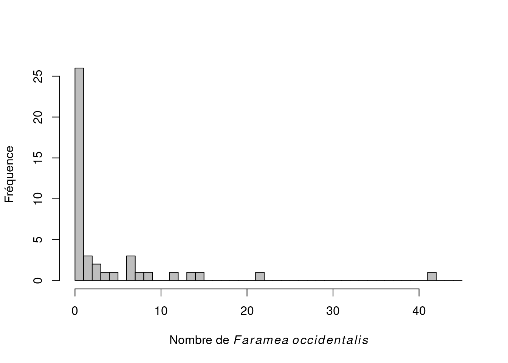
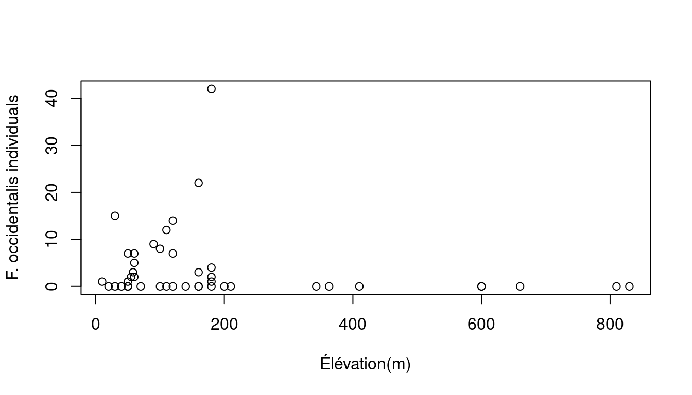
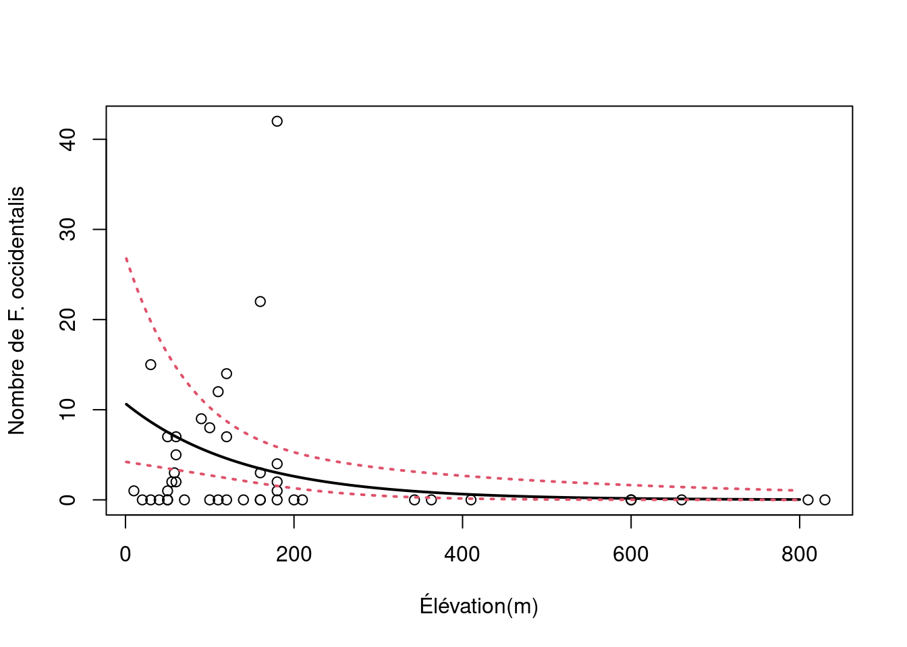

Chapitre 8 Que faire avec des données d’abondance?
Les données discrètes (ou d’abondance) sont caractérisées par:
- Des valeurs positives: on ne peut compter -7 individus
- Valeurs discrètes: on ne peut compter 7.56 individus
- Démontre une variance élevée pour des valeurs élevées
Afin d’illustrer l’utilisation des GLMs avec des données d’abondance, nous allons utiliser un nouveau jeux de données: faramea.
faramea <- read.csv("faramea.csv", header = TRUE)Ce jeux de données s’intéresse à l’espèce d’arbre Faramea occidentalis sur l’île Barro Colorado au Panama. 43 transects ont été utilisés afin de mesurer le nombre d’arbre le long d’un gradient environnemental. Des caractéristiques environnementales, comme l’élévation du terrain et la précipitation, ont aussi été mesurées au niveau de chaque transect. Examinons maintenant à quoi ressemble la distribution du nombre d’arbres par transect.
# Histogram of F. occidentalis count data
hist(faramea$Faramea.occidentalis, breaks = seq(0, 45, 1), xlab = expression(paste("Nombre de ",
italic(Faramea ~ occidentalis))), ylab = "Fréquence", main = "",
col = "grey")
Nous pouvons remarquer qu’il n’y a que des valeurs entières et positives.
Pour cet exemple, nous voulons tester si l’élévation (un prédicteur à valeurs continues) influence l’abondance de Faramea occidentalis.

Etant donné cette spécificité propre aux données de dénombrement, la distribution de Poisson, semble un choix approprié pour modéliser ces données avec l’élévation.
8.1 GLM avec une distribution de Poisson
8.1.1 La distribution de Poisson
La distribution de Poisson specifie que la probabilité d’une variable discrète aléatoire \(Y\) est donné par:
\[f(y, \,\mu)\, =\, Pr(Y = y)\, =\, \frac{\mu^y \times e^{-\mu}}{y!}\]
\[E(Y)\, =\, Var(Y)\, =\, \mu\]
où \(\mu\) est le paramètre de la distribution de Poisson
La distribution de Poisson est particulièrement appropriée pour modéliser des données de dénombrement car :
- elle ne spécifie des probabilités que pour des valeurs entières
- \(P(y<0) = 0\), en d’autres termes la probabilité d’observer une valeur négative est nulle
- la relation entre la moyenne et la variance permet de manipuler des données hétérogènes (e.g. quand la variance dans les données augmente avec la moyenne)
Un GLM de Poisson va modéliser la valeur de \(\mu\) comme un fonction de différente variables prédictrices:
Étape 1.
Nous assumons que \(Y_i\) suit une distribution de Poisson avec un moyenne et une variance \(\mu_i\).
\[Y_i ∼ Poisson(\mu_i)\]
\[E(Y_i) = Var(Y_i) = \mu_i\]
\[f(y_i, \, \mu_i) = \frac{\mu^{y_i}_i \times e^{-\mu_i}}{y!}\]
\(\mu_i\) est le nombre attendu d’individus.
Étape 2.
Nous spécifions le prédicteur linéaire du modèle en tant qu’un modèle linéaire.
\[\underbrace{\alpha}_\text{Interception} + \underbrace{\beta_1}_\text{pente de 'Élévation'} \times \text{Élévation}_i + \underbrace{\beta_2}_\text{pente de 'Précipitation'} \times \text{Précipitation}_i\]
Étape 3.
La fonction de lien entre la moyenne \(Y_i\) et le prédicteur linéaire est une fonction logarithmique et peut être écrit de cette façon:
\[log(\mu_i) = \alpha + \beta_1 \times \text{Élévation}_i + \beta_2 \times \text{Précipitation}_i\]
ou écrit tel que:
\[\mu_i = e^{ \alpha + \beta_1 \times \text{Élévation}_i + \beta_2 \times \text{Précipitation}_i}\]
Ceci démontre que l’impact de chaque variable prédictrice est multiplicatif. En augmentant l’élévation de 1, on augmente \(μ\) par un incrément de exp( \(\beta_\text{Élévation}\))
Nous pouvons aussi l’écrire de cette façon:
\[\mu_i = e^{\alpha} \times e^{\beta_1^{\text{Élévation}_i}} \times e^{\beta_2^{\text{Précipitation}_i}}\]
Si \(β_j = 0\) alors \(exp(β_j) = 1\) et \(μ\) n’est pas lié à \(x_j\). Si \(β_j > 0\) alors \(μ\) augmente aussi si \(x_j\) augmente; si \(β_j < 0\) alors \(μ\) diminue si \(x_j\) augmente.
8.1.2 GLM de Poisson dans R
Pour ajuster un GLM avec une distribution de Poisson sous R, il suffit
de spécifier family = poisson dans la fonction glm(). Par défaut la fonction de lien est la fonction logarithmique.
# Fit a Poisson GLM
glm.poisson = glm(Faramea.occidentalis ~ Elevation, data = faramea,
family = poisson) # this is what makes it a Poisson GLM! Note the default link is log.
summary(glm.poisson)##
## Call:
## glm(formula = Faramea.occidentalis ~ Elevation, family = poisson,
## data = faramea)
##
## Deviance Residuals:
## Min 1Q Median 3Q Max
## -3.3319 -2.7509 -1.5451 0.1139 11.3995
##
## Coefficients:
## Estimate Std. Error z value Pr(>|z|)
## (Intercept) 1.7687001 0.1099136 16.092 < 2e-16 ***
## Elevation -0.0027375 0.0006436 -4.253 2.11e-05 ***
## ---
## Signif. codes: 0 '***' 0.001 '**' 0.01 '*' 0.05 '.' 0.1 ' ' 1
##
## (Dispersion parameter for poisson family taken to be 1)
##
## Null deviance: 414.81 on 42 degrees of freedom
## Residual deviance: 388.12 on 41 degrees of freedom
## AIC: 462.01
##
## Number of Fisher Scoring iterations: 10Ordonnée à l’origine = \(\alpha\)
Élévation = \(\beta\)
Le résumé est similaire à celui de la fonction lm ( voir l’atelier 4) et donne les estimations des paramètres. Vous pouvez aussi récupérer les estimations des paramètres à l’aide des fonctions suivantes :
# Ordonnée à l'origine
summary(glm.poisson)$coefficients[1, 1]## [1] 1.7687# pente de elevation
summary(glm.poisson)$coefficients[2, 1]## [1] -0.002737509À partir d’ici, nous pouvons estimer les déviance résiduelle et nulle. Dans notre modèle, la paramètre inconnu est l’ordonnée à l’origine (\(\alpha\)) et la pente de l’élévation (\(\beta\)):
\[log(\mu_i) = 1.769 - 0.0027 \times \text{Élévation}_i\]
qui peut aussi être écrit comme:
\[\mu_i = e^{1.769 - 0.0027 \times \text{Élévation}_i}\] Rappelez-vous que pour estimer une paramètre inconnu, l’estimation de la vraisemblance maximale est utilisée.
La déviance rédiuelle est défini par:
\[\text{residual deviance} = 2 \, log(L(y;\,y)) - 2 \, log(L(y;\, \mu))\]
Pour un GLM de Poisson, la déviance résiduelle devrait être proche du degré de liberté résiduel. Cependant, notre déviance résiduelle est beaucoup plus élevée que le degré de liberté de notre modèle!
\[388.12 >> 41\]
8.1.3 La validation du modèle et le problème de la surdispersion
Un aspect important du résumé se trouve dans les dernières lignes :
## Null deviance: 414.81 on 42 degrees of freedom Residual
## deviance: 388.12 on 41 degrees of freedomL’estimation du maximum de vraisemblance est utilisé afin d’estimer les paramètres. Nous avons déjà mentionné que la déviance est l’équivalent en maximum de vraisemblance des sommes des carrés dans un modèle linéaire. Ici vous pouvez considérer la déviance nulle et la déviance résiduelle comme les équivalents de la somme totale des carrés et de la somme des carrés résiduelle. La déviance résiduelle correspond à deux fois la différence entre la log-vraisemblance de deux modèles : un modèle qui s’ajuste parfaitement aux données (i.e. un modèle saturé) et le modèle que nous voulons tester. Si notre modèle est correct, la distribution de la déviance résiduelle est estimée selon une distribution du χ² avec \(n\)-\(p\)-1 degrés de liberté (où \(n\) correspond au nombre d’observations et \(p\) correspond au nombre de variables explicatives). Une implication très importante en ce qui nous concerne est que la déviance résiduelle doit être égale au nombre de degrés de liberté résiduels. Dans notre example, la déviance résiduelle vaut 388.12, tandis que nous avons 41 (43-1-1) degrés de liberté. La déviance est 9.5 fois supérieure au nombre de dégrés de liberté. Le modèle peut alors être qualifié de surdispersé.
La surdispersion La surdispersion peut être évaluée à l’aide du paramètre de surdispersion φ qui se mesure donc de la facon suivante :
φ = déviance résiduelle / dégrés de liberté résiduels
* φ < 1 indique qu'il y a sousdispersion
* φ = 1 indique que la dispersion est conforme aux attendus
* φ > 1 indique qu'il y a surdispersionMais pourquoi un GLM présente-il de la surdispersion ? En fait, des modèles GLM sont surdispersés quand la variance dans les données est encore plus grande que ce qu’autorise la distribution de Poisson. Par exemple, cela peut se produire lorsque les données contiennent de nombreux zeros ou beaucoup de très grosses valeurs. Si nous revenons sur la distribution de nos données (ci-dessus) nous pouvons remarquer que ces deux problèmes sont présents et que la distribution de Poisson n’était peut être pas le choix idéal. La surdispersion peut aussi survenir lorsque des variables explicatives ou des termes d’intéractions sont absentes ou bien encore lorsque qu’il y a des problèmes de valeurs aberrantes.
La distribution de Poisson peut tenir compte de l’hétérogénéité présente dans des données grace à la relation entre sa moyenne et sa variance. Toutefois dans certains cas la variance augmente bien plus rapidement par rapport à la moyenne si bien que la distribution de Poisson n’est plus appropriée. Pour nous convaincre une dernière fois d’abandonner la distribution de Poisson pour modéliser l’abondance de l’espèce faramea nous pouvons rapidement calculer la moyenne et la variance dans notre jeux de données :
mean(faramea$Faramea.occidentalis)## [1] 3.883721var(faramea$Faramea.occidentalis)## [1] 60.24806Dans la pratique, les GLMs basés sur la distribution de Poisson sont très pratique pour décrire la moyenne µi mais vont sous-estimer la variance dans les données dès qu’il y a de la surdispersion. Par conséquent, les tests qui découlent du modèle seront trop laxistes. Il y a deux moyens de traiter les problèmes de surdispersion que nous allons détailler ci-dessous :
- corriger la surdispersion en utilisant un GLM quasi-Poisson
- choisir une nouvelle distribution comme la binomiale négative
8.2 GLM avec une distribution quasi-Poisson
Le principe d’un GLM avec une distribution «quasi» Poisson est très simple; le paramètre de surdispersion (φ) est ajouté dans l’équation qui spécifie la variance du modèle :
\[E(Y_i) = \mu_i\]
\[Var(Y_i) = φ.\mu_i\]
Le prédicteur linéaire, ainsi que la fonction de lien (log) restent les mêmes. La seule différence est que \(φ\) va être estimé afin de corriger le modèle. Les estimations des paramètres seront eux aussi inchangés, mais leurs écarts-types seront multiplés par \(√φ\). Ainsi, certains paramètres qui étaient marginalement significatifs peuvent ne plus le rester.
Dans R, la famille quasipoisson peut être utilisée pour traiter
ces problèmes de surdispersion (de la même manière la famille
quasibinomial peut être utilisée). L’estimation de \(φ\) sera donné
dans le résumé du modèle GLM quasi-Poisson. Nous pouvons ajuster ce
modèle de deux manières différentes :
# Option 1, nous ajustons un nouveau modèle GLM
# quasi-Poisson
glm.quasipoisson = glm(Faramea.occidentalis ~ Elevation, data = faramea,
family = quasipoisson)
# Option 2, nous actualisons le modèle précédent :
glm.quasipoisson = update(glm.poisson, family = quasipoisson)
# regardons le résumé
summary(glm.quasipoisson)##
## Call:
## glm(formula = Faramea.occidentalis ~ Elevation, family = quasipoisson,
## data = faramea)
##
## Deviance Residuals:
## Min 1Q Median 3Q Max
## -3.3319 -2.7509 -1.5451 0.1139 11.3995
##
## Coefficients:
## Estimate Std. Error t value Pr(>|t|)
## (Intercept) 1.768700 0.439233 4.027 0.000238 ***
## Elevation -0.002738 0.002572 -1.064 0.293391
## ---
## Signif. codes: 0 '***' 0.001 '**' 0.01 '*' 0.05 '.' 0.1 ' ' 1
##
## (Dispersion parameter for quasipoisson family taken to be 15.96936)
##
## Null deviance: 414.81 on 42 degrees of freedom
## Residual deviance: 388.12 on 41 degrees of freedom
## AIC: NA
##
## Number of Fisher Scoring iterations: 10En examinant le résumé du modèle, nous pouvons voir que \(φ\) est estimé à 15.97. Nous avons donc eu raison de corriger le modèle afin de prendre en compte la surdispersion. Par contre, si nous regardons la significativité du coefficient de regression associé à l’élévation, nous remarquons qu’il n’est plus significatif. Cependant, 15.97 indique que la surdispersion est forte et en général un GLM quasi-Poisson est favorisé lorsque \(φ\) est compris entre 1 et 15. Lors que la surdispersion se trouve netre 15 et 20, il est recommandé d’utiliser une distribution binomiale négative à nos données.
Deux points sont importants à garder en tête lorsque vous utilisez un GLM quasi-Poisson afin de corriger la surdispersion :
Les GLMs quasi-Poisson n’ont pas d’AIC. En effet, la vraisemblance d’un modèle GLM quasi-Poisson ne peut pas être spécifiée et s’appuie sur une procédure de pseudo-maximum de vraisemblance. Par conséquence les GLMs quasi-Poisson n’ont pas d’AIC, et ce critère ne peut pas être utilisé afin de comparer différents modèles. Toutefois des alternatives ont été developpées pour gérer cette situation (e.g. quasi-AIC).
La surdispersion influence la comparaison de modèles. En effet, la surdispersion influence la comparaison de deux modèles emboités et doit donc être prise en considération. Par exemple, considérons que nous voulons comparer le modèle GLM1, qui contient \(p_1\) paramètres avec le modèle GLM2, qui contient \(p_2\) paramètres. GLM1 est emboité dans GLM2 et \(p2 > p1\). La comparaison des deux modèles est basées sur le test du rapport des vraisemblances des deux modèles, \(D_1\) et \(D_2\) respectivement. Si la surdispersion est connue, les déviances doivent être corrigées de manière approprié selon \(D^* = D/φ\), et le test final sera basé sur le critère \(D^*_1 - D^*_2\) qui est supposé être distributé selon une distribution du \(χ²\) avec \(p_1-p_2\) degrés de liberté lorsque le modèle GLM1 est correct.
Mais dans certain cas \(φ\) n’est pas connu. Par exemple, lorsque vous spécifiez un GLM avec un distribution normale. Dans ce cas, φ peut être estimé a posteriori en utilisant la déviance résiduelle du plus gros modèle de telle sorte que le critière de comparaison devienne:
\[\frac{(D_1-D_2)/(p_2-p_1)}{D_2(n-p_2)}\]
Ce critère est supposé suivre une distribution F avec \(p_1-p_2\) et \(n-p_2\) degrés de liberté.
Testons l’effet de l’élévation par une analyse de déviance.
null.model <- glm(Faramea.occidentalis ~ 1, data = faramea, family = quasipoisson)
anova(null.model, glm.quasipoisson, test = "Chisq")## Analysis of Deviance Table
##
## Model 1: Faramea.occidentalis ~ 1
## Model 2: Faramea.occidentalis ~ Elevation
## Resid. Df Resid. Dev Df Deviance Pr(>Chi)
## 1 42 414.81
## 2 41 388.12 1 26.686 0.1961Paramètre de dispesion:

8.3 GLM avec une distribution binomiale négative
Un GLM avec une distribution binomiale négative (BN) est utilisé lorsque la surdispersion est très forte. La distribution BN contient un paramètre supplémentaire, \(k\), qui va être très utile pour gérer les problèmes de surdispersion. Avant de rentrer dans les détails sur R, voyons rapidement ce qui se cache derrière la distribution BN. En fait, la distribution BN est la combinaison de deux distributions; une distribution de Poisson et une distribution Gamma. La distribution BN définie la distribution d’une variable aléatoire discrète de la même manière qu’une distribution de Poisson mais autorise la variance à être différente de la moyenne.

Le mélange entre la distribution de Poisson et la distribution Gamma peut se résumer à l’aide de deux paramètres, \(µ\) et \(k\) qui spécifie la distribution de la facon suivante :
\[Y \sim NB(µ, k)\]
\[E(Y) = µ~et~Var(Y) = µ + µ²/k\]
De cette manière nous pouvons voir comment cette distribution va gérer la surdispersion dans les modèles GLM. Le deuxième terme de la variance de la distribution BN va déterminer le degré de surdispersion. En effet, la surdispersion est indirectement déterminée par \(k\), que représente le paramètre de dispersion. Si \(k\) est grand (par rapport à \(μ²\)), la deuxième partie de la variance, \(µ²/k\) va s’approcher de 0, et la variance de Y sera \(μ\). Dans ce cas la distribution BN converge vers la distribution de Poisson et vous pourriez tout aussi bien utiliser cette dernière. Par contre, plus \(k\) sera petit et plus la surdispersion sera grande. Comme avec toutes les autres distributions, un GLM avec une distribution BN se spécifie en trois étapes. Tout d’abord le modèle fait l’hypothèse que les Yi suivent une distribution BN de moyenne \(μ_i\) et de paramètre \(k\).
\[Y_i \sim NB(µ_i, k)\]
\[E(Y_i) = µ_i~and~Var(Y_i) = µ_i + µ_i²/k\] Les deux dernières étapes définissent le prédicteur linéaire ainsi que la fonction de lien entre la moyenne des \(Y_i\) et le prédicteur linéaire. La fonction de lien utilisée par les GLMs avec une distribution BN est le logarithme ce qui permet de s’assurer que les valeurs prédites soient toujours positives.
\[log(µ_i) = β_0 + βX_i\]
ou
\[µ_i = exp(β_0 + βX_i)\]
Vous pouvez ajuster un GLM avec une distribution BN à l’aide de la
fonction glm.nb() du package MASS:
glm.negbin = glm.nb(Faramea.occidentalis ~ Elevation, data = faramea)
summary(glm.negbin)##
## Call:
## glm.nb(formula = Faramea.occidentalis ~ Elevation, data = faramea,
## init.theta = 0.2593107955, link = log)
##
## Deviance Residuals:
## Min 1Q Median 3Q Max
## -1.36748 -1.17564 -0.51338 -0.05226 2.25716
##
## Coefficients:
## Estimate Std. Error z value Pr(>|z|)
## (Intercept) 2.369226 0.473841 5.00 5.73e-07 ***
## Elevation -0.007038 0.002496 -2.82 0.00481 **
## ---
## Signif. codes: 0 '***' 0.001 '**' 0.01 '*' 0.05 '.' 0.1 ' ' 1
##
## (Dispersion parameter for Negative Binomial(0.2593) family taken to be 1)
##
## Null deviance: 41.974 on 42 degrees of freedom
## Residual deviance: 36.343 on 41 degrees of freedom
## AIC: 182.51
##
## Number of Fisher Scoring iterations: 1
##
##
## Theta: 0.2593
## Std. Err.: 0.0755
##
## 2 x log-likelihood: -176.5090Le résumé du modèle et similaire à celui des autres GLMs (e.g. GLMs Poisson). Cependant vous avez maintenant un nouveau paramètre, theta, qui est le paramètre \(k\) de la variance de votre distribution. L’écart-type de ce paramètre est aussi fourni, mais attention à son interprétation car l’intervalle n’est pas symétrique.
8.4 Représentation graphique du modèle final
Le GLM avec une distribution BN semble être le meilleur modèle pour modéliser nos données. Nous voulons maintenant représenter la relation entre le nombre de Faramea occidentalis et l’élévation.
Utilisez summary pour obtenir les paramètres.
summary(glm.negbin)$coefficients[1, 1]## [1] 2.369226summary(glm.negbin)$coefficients[2, 1]## [1] -0.007038124Utilisez les écarts-types pour construire l’intervalle de confiance.
summary(glm.negbin)$coefficients[1, 2]## [1] 0.4738409summary(glm.negbin)$coefficients[2, 2]## [1] 0.002496143pp <- predict(glm.negbin, newdata = data.frame(Elevation = 1:800),
se.fit = TRUE)
linkinv <- family(glm.negbin)$linkinv ## inverse-link function
pframe <- as.data.frame(pp$fit)
names(pframe) <- "pred0"
pframe$pred <- linkinv(pp$fit)
sc <- abs(qnorm((1 - 0.95)/2)) ## Normal approx. to likelihood
pframe <- transform(pframe, lwr = linkinv(pred0 - sc * pp$se.fit),
upr = linkinv(pred0 + sc * pp$se.fit))
plot(faramea$Elevation, faramea$Faramea.occidentalis, ylab = "Nombre de F. occidentalis",
xlab = "Élévation(m)")
lines(pframe$pred, lwd = 2)
lines(pframe$upr, col = 2, lty = 3, lwd = 2)
lines(pframe$lwr, col = 2, lty = 3, lwd = 2)
Nous pouvons voir que le nombre de Faramea occidentalis diminue de manière significative avec l’élévation. Toutefois, l’intervalle de confiance autour de notre modèle est assez large, notamment à faible élévation.
8.4.1 Défi 3
Utilisez le jeu de données mites! Modélisez l’abondance de l’espèce
Galumna en fonction des caractéristiques du substrat (son contenu en eau WatrCont et sa densité SubsDens).
Faut-il contrôler pour la surdispersion?
Quelles variables explicatives ont un effet significatif?
Selectionnez le meilleur modèle!
mites <- read.csv("mites.csv", header = TRUE)Retirez une variable à la fois et comparez le modèle imbriqué au modèle saturé (ou complet):
drop1(MyGLM, test = "Chi")Spécifiez un modèle imbriqué manuellement, appelez le MyGLM2,
et utilisez la fonction anova():
anova(MyGLM, MyGLM2, test = "Chi")Cliquez pour voir la solution au Défi 3!
# GLM Poisson
glm.p = glm(Galumna ~ WatrCont + SubsDens, data = mites, family = poisson)
# GLM quasi-Poisson
glm.qp = update(glm.p, family = quasipoisson)
# sélection du modèle
drop1(glm.qp, test = "Chi")## Single term deletions
##
## Model:
## Galumna ~ WatrCont + SubsDens
## Df Deviance scaled dev. Pr(>Chi)
## <none> 101.49
## WatrCont 1 168.10 31.711 1.789e-08 ***
## SubsDens 1 108.05 3.125 0.07708 .
## ---
## Signif. codes: 0 '***' 0.001 '**' 0.01 '*' 0.05 '.' 0.1 ' ' 1# ou
glm.qp2 = glm(Galumna ~ WatrCont, data = mites, family = quasipoisson)
anova(glm.qp2, glm.qp, test = "Chisq")## Analysis of Deviance Table
##
## Model 1: Galumna ~ WatrCont
## Model 2: Galumna ~ WatrCont + SubsDens
## Resid. Df Resid. Dev Df Deviance Pr(>Chi)
## 1 68 108.05
## 2 67 101.49 1 6.5657 0.07708 .
## ---
## Signif. codes: 0 '***' 0.001 '**' 0.01 '*' 0.05 '.' 0.1 ' ' 1
8.5 Conclusion sur les GLM avec des données d’abondance
Tous les GLM que nous venons de voir pour modéliser des données de d’abondance (Poisson, quasi-Poisson et BN) utilisent la même relation log-linéaire entre moyenne et prédicteur linéaire (\(log(µ) = βx\)). Toutefois ils vont autoriser différentes relations entre la moyenne et la variance et vont aussi se reposer sur des méthodes d’estimation de la vraisemblance différentes. Les GLMs Quasi-Poisson ou BN sont privilégiés afin de traiter la surdispersion. Malheureusement dans certains cas les données peuvent contenir trop de zeros et d’autres modèles seront plus éfficaces pour traiter ces situations. C’est par exemple le cas des «zero-augmented models» (e.g. zero-inflated Poisson; ZIP) qui vont traiter les zéros indépendamment des autres valeurs.